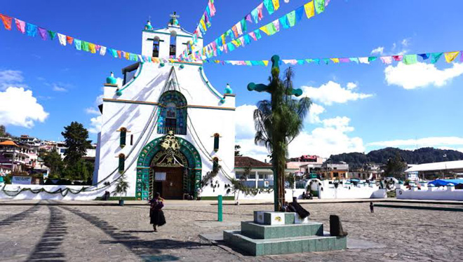
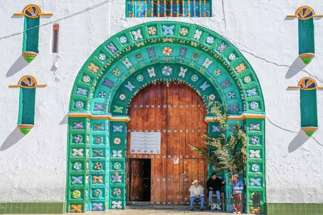
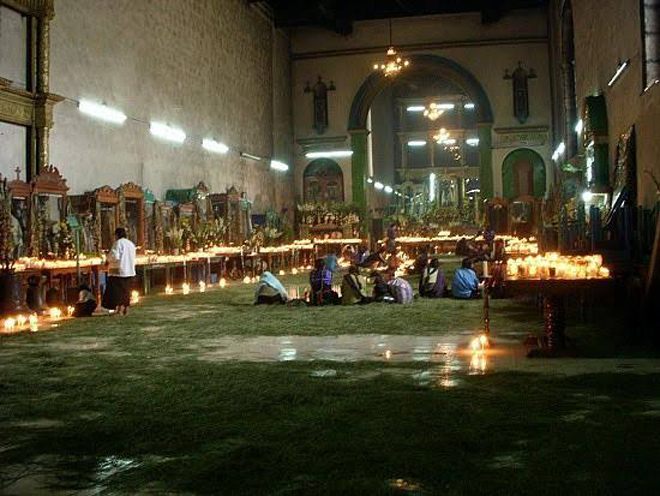
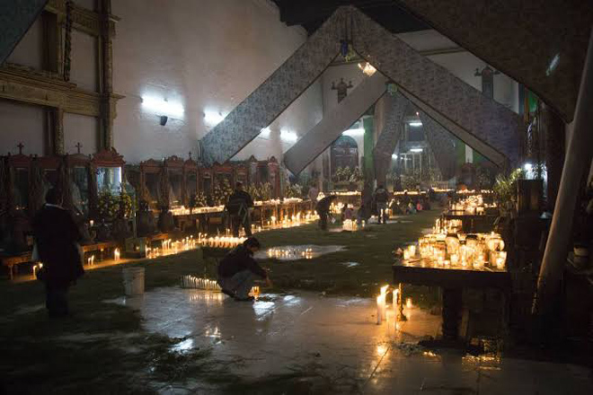
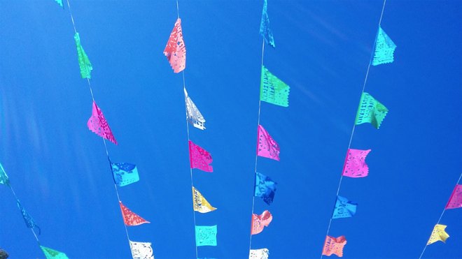
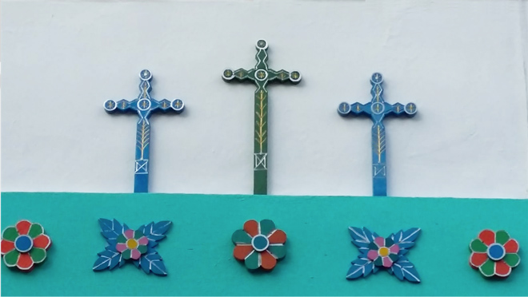
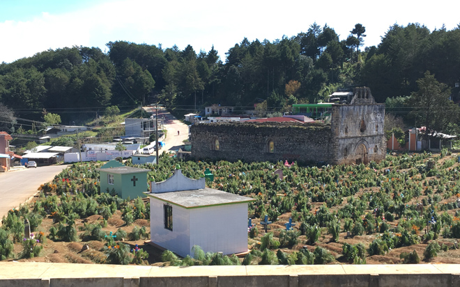
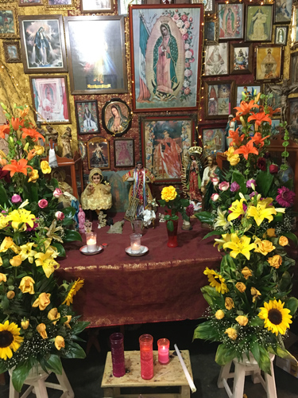
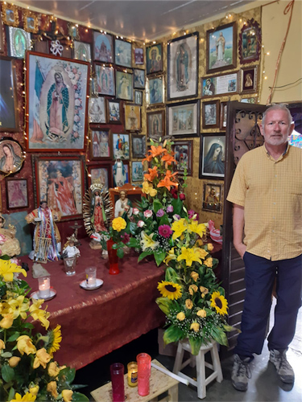
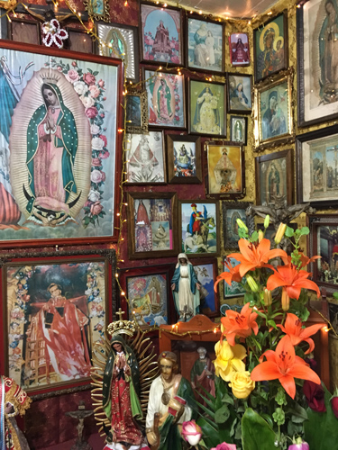
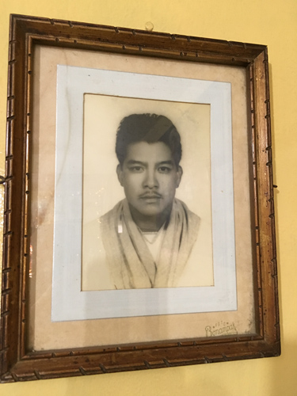
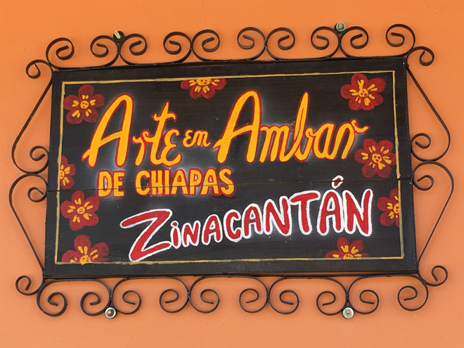
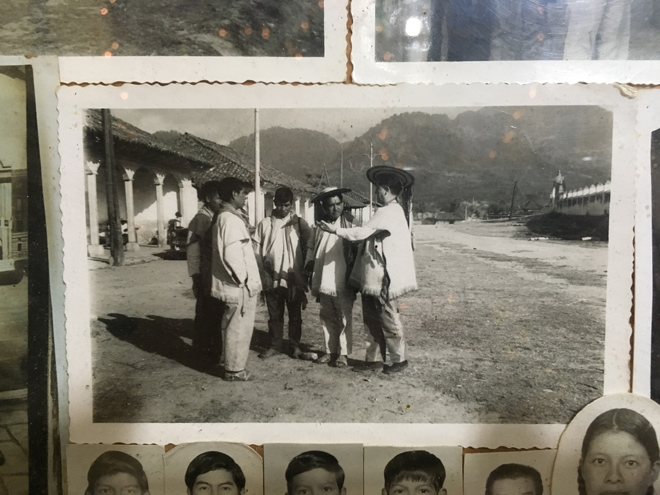
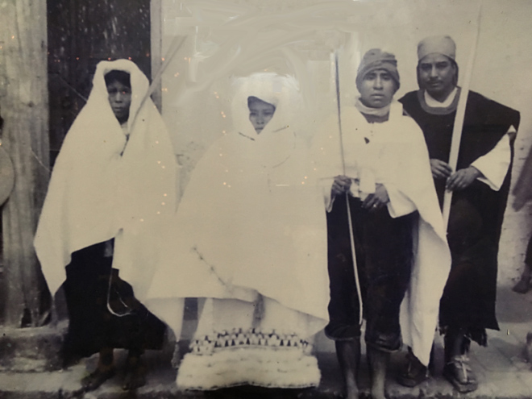
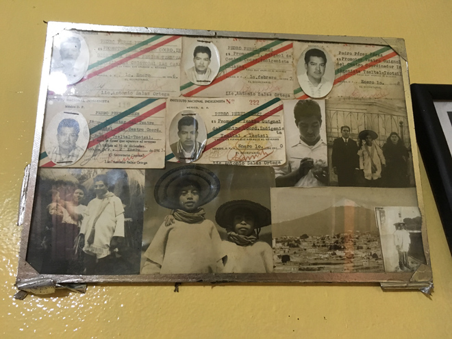
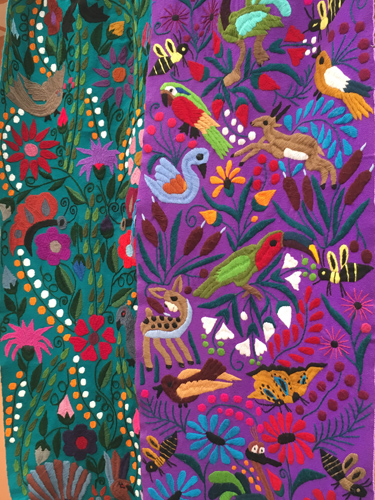
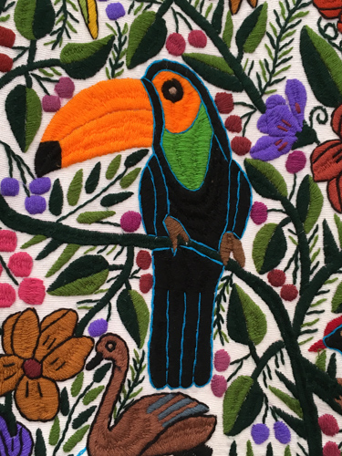
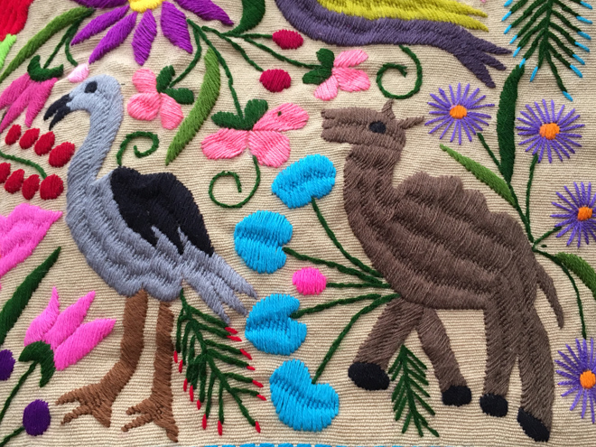
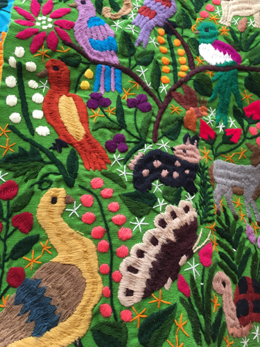
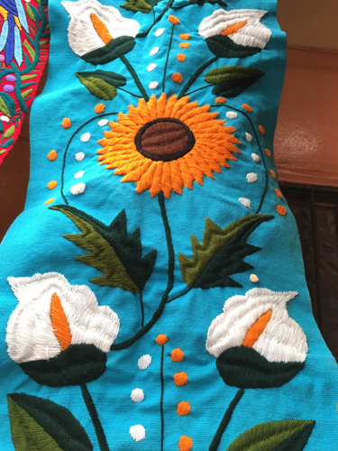
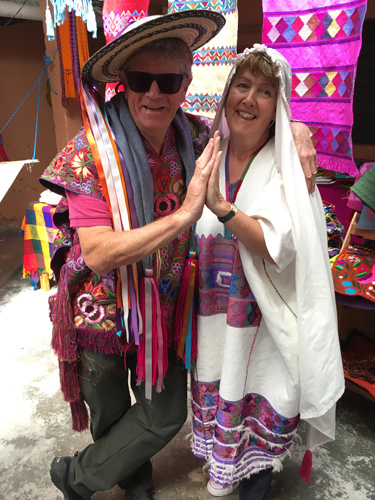
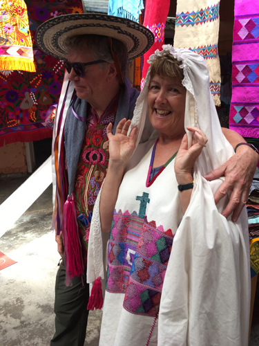
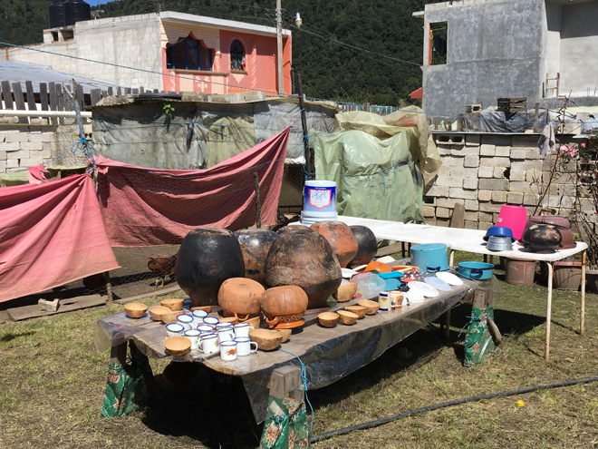
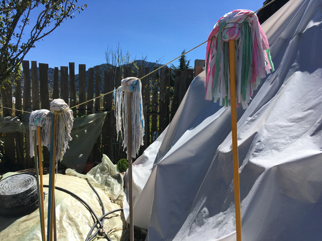
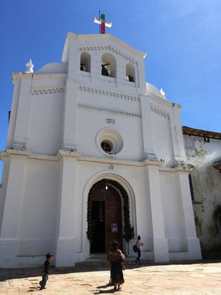
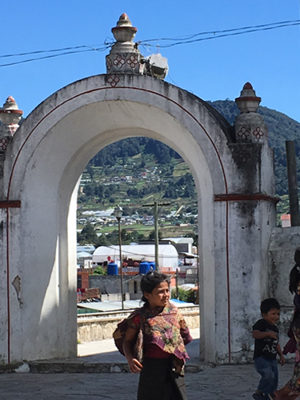
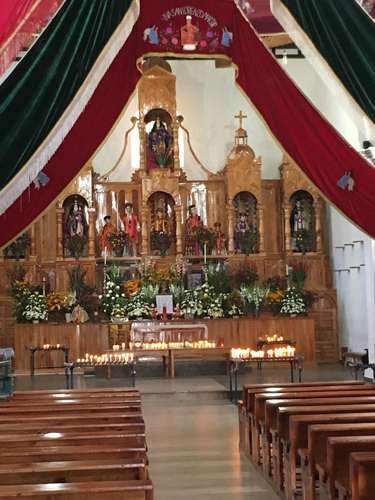
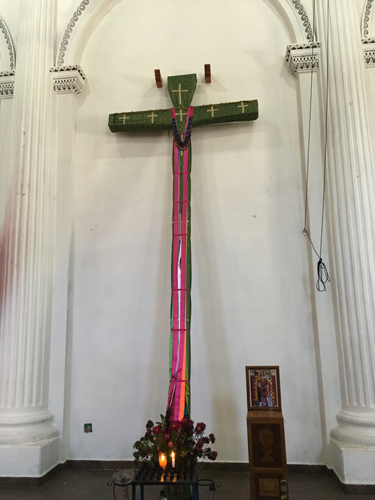
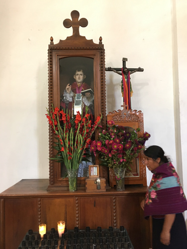
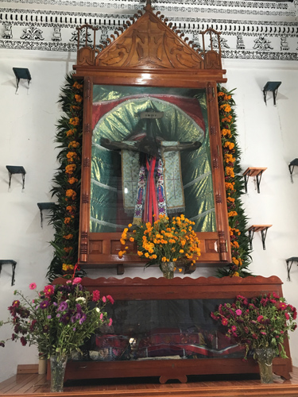
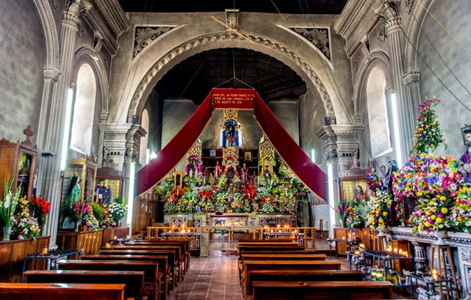
The Zapatista Army of National Liberation "EZLN" (often referred to as the Zapatistas) is a far-left libertarian-socialist political and militant group that controls a substantial amount of territory in Chiapas, the southernmost state of Mexico. Since 1994 the group has been nominally at war with the Mexican state, pledging to overturn the oligarchy's centuries-old hold on land, resources and power and improve the wretched living standards of Mexico's indigenous people.
The group takes its name from Emiliano Zapata, the agrarian revolutionary and commander of the Liberation Army of the South during the Mexican Revolution, and sees itself as his ideological heir. Nearly all EZLN villages contain murals with images of Zapata and Ernesto "Che" Guevara.
These photographs were sold as postcards in the same shop as the beautiful embroidery.
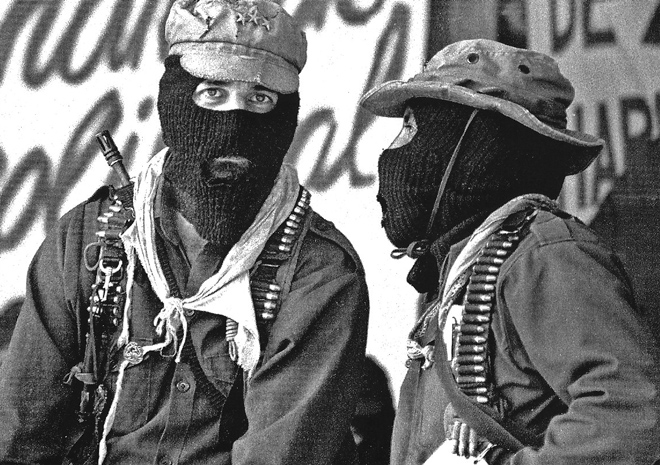
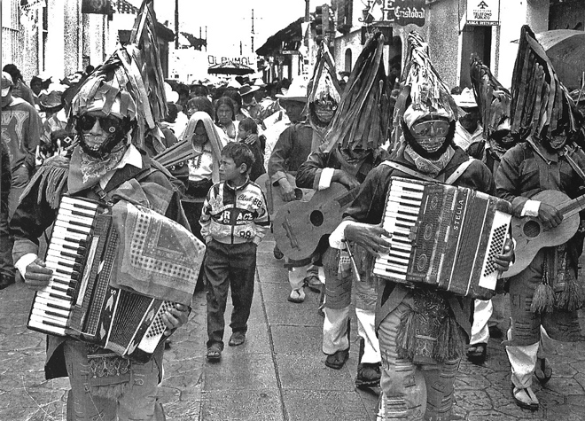
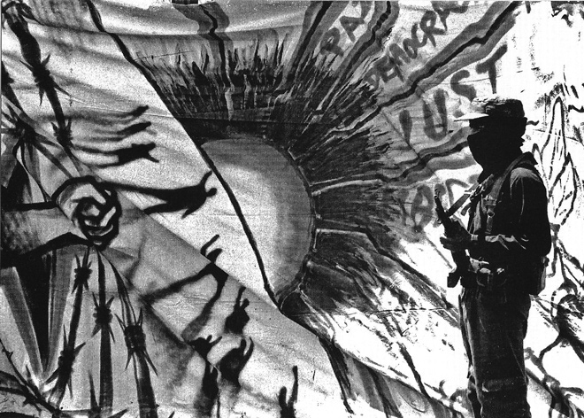
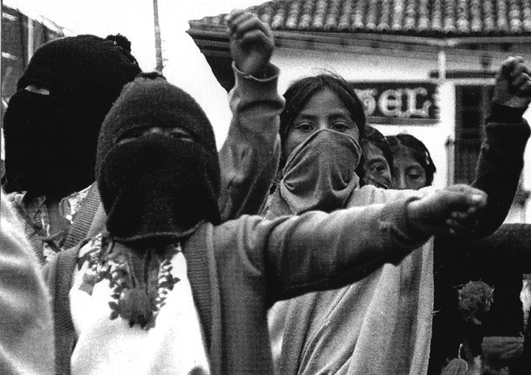